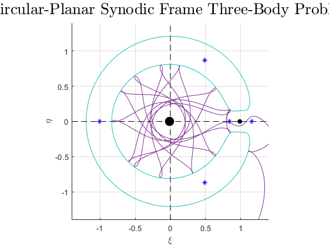
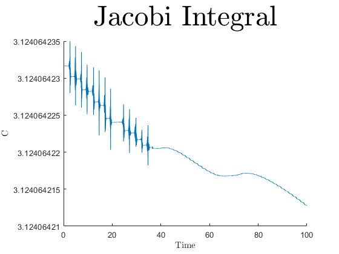

Contents
function ThreeBodyProblem
m1 = 5.9722*10^24;
m2 = 7.34767*10^22;
mu = (m1/m2+1)^(-1);
Jacobi Synodic Frame Plot:
xi0 = [.8;0]; eta0 = [0;.3];
x0 = [xi0;eta0];
tspan = [0 100];
[t,x] = ode45(@(t,x)JacobiEOM(t,x,mu),tspan,x0,odeset('AbsTol',1e-12,'RelTol',1e-9));
r1 = sqrt((x(:,1)+mu).^2+x(:,3).^2);
r2 = sqrt((x(:,1)-1+mu).^2+x(:,3).^2);
C = 2*((1-mu)*(.5*r1.^2+r1.^(-1))+mu*(.5*r2.^2+r2.^(-1)))-(x(:,2).^2+x(:,4).^2);
[X,Y,CC] = ZeroVelCurve(mu,[-1.4 1.4],[-1.4 1.4]);
figure; hold on; axis equal; grid on; axis([-1.4 1.4 -1.4 1.4]);
xlabel('\xi'); ylabel('\eta'); title('Circular-Planar Synodic Frame Three-Body Problem','interpreter','latex','fontsize',20);
plot([-1.4 1.4],[0 0],'--k');
plot([0 0],[-1.4 1.4],'--k');
plot(-mu,0,'k.','MarkerSize',40);
plot(1-mu,0,'k.','MarkerSize',20);
plot(0,0,'k.');
l = plot(.83692,0,'b*');
plot(1.15568,0,'b*');
plot(-1.00506,0,'b*');
plot(.48785,.86603,'b*');
plot(.48785,-.86603,'b*');
plot(x(:,1),x(:,3));
contour(X,Y,CC,[C(1) C(1)]);
figure; hold on;
xlabel('Time','interpreter','latex'); ylabel('C','interpreter','latex');title('Jacobi Integral','interpreter','latex','fontsize',35);
plot(t,C);
 
end
function xdot = NewtonEOM(x,m)
G = 6.6743*10^(-17);
xdot = [x(4:6)
G*m2*(x(7:9)-x(1:3))/(sqrt(sum((x(7:9)-x(1:3)).^2)))^3+G*m3*(x(13:15)-x(1:3))/(sqrt(sum((x(13:15)-x(1:3)).^2)))^3
x(10:12)
G*m1*(x(1:3)-x(7:9))/(sqrt(sum((x(7:9)-x(1:3)).^2)))^3+G*m3*(x(13:15)-x(7:9))/(sqrt(sum((x(13:15)-x(7:9)).^2)))^3
x(16:18)
G*m1*(x(1:3)-x(13:15))/(sqrt(sum((x(13:15)-x(1:3)).^2)))^3+G*m2*(x(7:9)-x(13:15))/(sqrt(sum((x(13:15)-x(7:9)).^2)))^3];
end
function xdot = JacobiEOM(t,x,mu)
xdot = [x(2)
-(1-mu)*(x(1)+mu)/((x(1)+mu)^2+x(3)^2)^(3/2)-mu*(x(1)+mu-1)/((x(1)+mu-1)^2+x(3)^2)^(3/2)+2*x(4)+x(1)
x(4)
-((1-mu)/((x(1)+mu)^2+x(3)^2)^(3/2)+mu/((x(1)+mu-1)^2+x(3)^2)^(3/2))*x(3)-2*x(2)+x(3)];
end
function [X,Y,C] = ZeroVelCurve(mu,xlim,ylim)
[X,Y] = meshgrid(linspace(xlim(1),xlim(2),1000),linspace(ylim(1),ylim(2),1000));
r1 = sqrt((X+mu).^2+Y.^2);
r2 = sqrt((X-1+mu).^2+Y.^2);
C = 2*((1-mu)*(.5*r1.^2+r1.^(-1))+mu*(.5*r2.^2+r2.^(-1)));
end